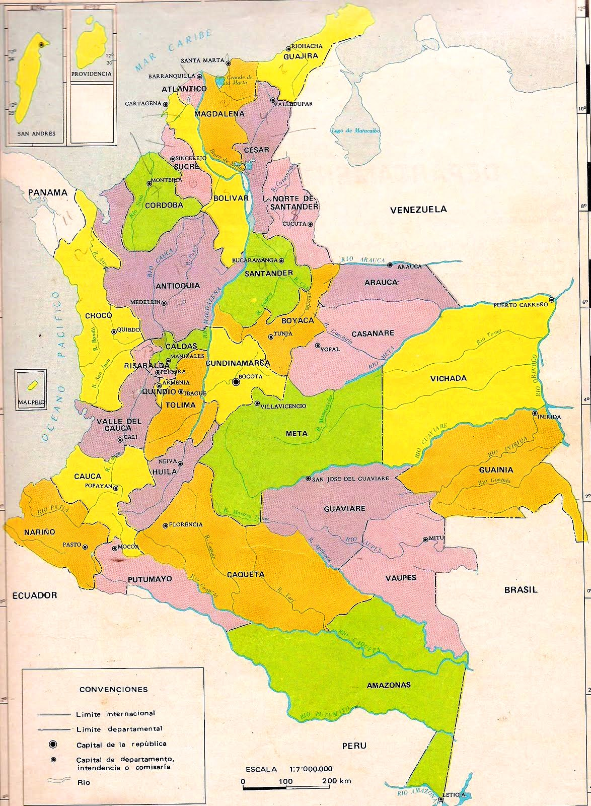

Mapa de colombia
Mapa interactivo
Este es un mapa interactivo en donde podras encontrar información sobre los sitios turisticos, comida tipica, informacion economica y ocupacional de los siguientes departamentos:
- Santander
- Antioquia
- Valle del cauca
